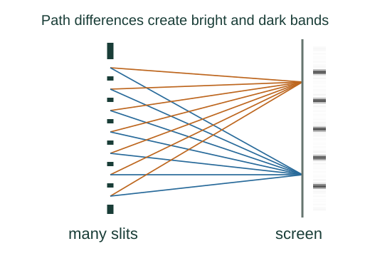

Derive grating maxima and resolving power
Many equally spaced slits produce narrow principal maxima. Their narrowing as more slits are illuminated explains why a grating can resolve nearby wavelengths.
What the symbols mean
d: slit spacing; N: illuminated slit count; m: positive diffraction order for resolving power; Δλ: small wavelength separation.
When this applies
Uniform coherent illumination, identical slits, far-field observation, normally incident light, and Rayleigh’s resolution criterion.
Developing the argument

Sum phase-shifted slit fields
Adjacent slits differ in phase by δ = 2πd sin θ/λ. The geometric series of N amplitudes has magnitude proportional to sin(Nδ/2)/sin(δ/2).
Locate principal maxima
When δ = 2πm all slit contributions align. The limiting amplitude is N times one slit’s amplitude.
A closer lookDerive the two-slit phase relation first ↗Estimate the first minimum near a maximum
Changing phase away from 2πm by approximately 2π/N makes the numerator vanish. Thus the angular half-width is λ/(Nd cos θm).
Compare two nearby wavelengths
Differentiate the principal-maximum condition at fixed order: d cos θ Δθ = mΔλ. Equating that separation to the first-minimum width gives the resolution threshold.
A worked example
With N = 5000 illuminated slits at second order, ideal resolving power is 10000. Near 500 nm, the nominal resolution is about 0.05 nm.
Derivation behind this calculation ↗A point to keep straight
A grating must actually support the chosen order: |mλ/d| ≤ 1. Real resolution also depends on slit illumination and instrument optics.
Check the assumptions and derivation ↗